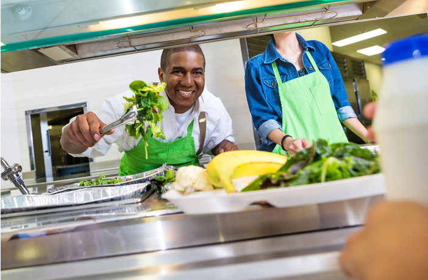

النظام الغذائي والواجبات المدرسية وممارسة الرياضة
لكي تتمكن من تحمل يوم دراسي كامل، من المهم أن تبدأ اليوم بوجبة فطور جيدة. هذا، وأحياناً مع ثمرة فاكهة كوجبة خفيفة، يساعدك على الحفاظ على التركيز حتى موعد الغداء. ولكي تتمكن من الاستمرار في النشاط طوال اليوم الدراسي، تحتاج بعد ذلك إلى وجبة غداء جيدة وربما وجبة خفيفة إضافية في فترة بعد الظهر.

إذا كنت تتدرب كثيراً، فإنك تحتاج إلى الحصول على طاقة أكثر من شخص غير نشيط بدنياً. عند ممارسة التمارين الشديدة، يمكن أن يحرق الشخص عدة أضعاف كمية الطاقة التي يحرقها شخص يقضي معظم وقته جالساً. إذا لم تحصل على كمية كافية من الطاقة أثناء التدريب، هناك خطر أن يبدأ الجسم في حرق العضلات بدلاً من الكربوهيدرات والدهون. كما يمكن أن يصبح من الصعب تحقيق أقصى استفادة من التدريب عند نقص الطاقة. لذلك من الجيد تناول الطعام قبل التمرين. ومع ذلك، لا ينبغي تناول الطعام قبل التمرين مباشرة. بالنسبة لتدريب القوة، يُفضل تناول الطعام قبل ساعة إلى ساعتين من التمرين. أما في حالة تدريب اللياقة القلبية (الكارديو)، فمن الأفضل تناول الطعام قبل التمرين بفترة أطول، لا تقل عن ساعتين، حتى لا تعيق عملية الهضم أداء التمرين.
قد يكون من المفيد أيضاً تكييف النظام الغذائي وفقاً لنوع التمرين الذي تمارسه. إذا كنت تمارس الكثير من تمارين الكارديو، يمكنك زيادة نسبة الكربوهيدرات في نظامك الغذائي، وإذا كنت تمارس الكثير من تمارين القوة، يمكن أن تكون نسبة البروتين أعلى.
صورة: مثال على وجبة.
صورة: مثال على وجبة.
صورة: مثال على وجبة.
مشروبات الطاقة شائعة بين الشباب، ويعتقد الكثيرون أن شرب علبة من مشروب الطاقة يجعلهم أكثر نشاطاً. هذا صحيح جزئياً، لأن هذه المشروبات تحتوي على كميات كبيرة من السكر والكافيين. ومع ذلك، فإن هذا يؤدي إلى ارتفاع مؤقت في مستويات السكر في الدم يعقبه انخفاض طويل يؤدي إلى ضعف التركيز. تختلف كمية الكافيين في مشروبات الطاقة، ومن المهم أن تعرف أن تناول كميات كبيرة من الكافيين يمكن أن يؤدي إلى القلق، التوتر، وخفقان القلب. في أسوأ الحالات، يمكن أن يؤدي الاستهلاك الكبير لمشروبات الطاقة إلى تسمم الكافيين.